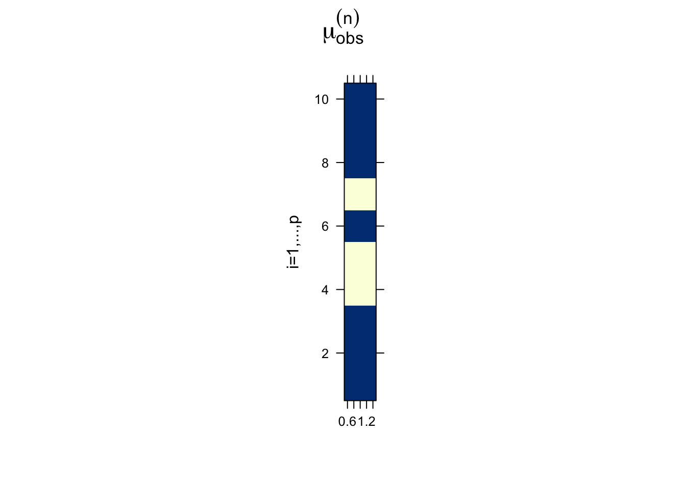

Maximum likelihood is the dominant form of estimation in statistics. Recall that it is a parameter estimation procedure, so we always have to put a parametric model to our data. The EM algorithm is an iterative algorithm for calculating maximum likelihood estimators (MLEs) in situations where
there is missing data (e.g., censored observations, Example 1 below) complicating the calculations, or
it is beneficial to think of our data as if there were some components missing, because it would simplify the calculation (e.g., estimating mixture distributions, Example 2 below).
Let us denote
\(X_{obs}\) are the observed random variables
\(X_{miss}\) are the missing random variables
\(\ell_{comp}(\theta)\) is the complete log-likelihood of \(X = (X_{obs},X_{miss})\)
maximizing this to obtain MLE is supposed to be simple
\(\theta\) denotes all the parameters, e.g. contains \(\mu\) and \(\Sigma\)
Our task is to maximize \(\ell_{obs}(\theta)\), the observed log-likelihood of \(X_{obs}\).
EM Algorithm: Start from an initial estimate \(\theta^{(0)}\) and for \(l=1,2,\ldots\) iterate the following two steps until convergence:
The E-step, i.e. calculating the expected likelihood, sometimes coincides with calculating expected values of the unobserved data (with the current parameters) and plugging them into the complete likelihood, but this is not always the case (see Example 3 below)! Actually, as will become clear, it is the case if and only if the complete log-likelihood is linear (w.r.t. the full data).
The task is to estimate \(\theta = (\mu_1,\mu_2,\sigma_1^2,\sigma_2^2,\tau)^\top\) via MLE, i.e., solve \[
\underset{\theta}{\mathrm{arg\,max}} \underbrace{\sum_{n=1}^N \log f(X_n)}_{\ell_{obs}(\theta)}.
\]
Straightforward solution via derivatives is not possible because of the superposition structure of \(f(x)\), which breaks the product structure and thus the log-likelihood does not have a nice form. For example \[
\frac{\partial}{\partial \tau} \ell_{obs}(\theta) = \sum_{n=1}^N \left[ \frac{-\varphi_{\mu_1,\sigma_1}(x_n) + \varphi_{\mu_2,\sigma_2}(x_n)}{(1-\tau) \varphi_{\mu_1,\sigma_1}(x_n) + \tau \varphi_{\mu_2,\sigma_2}(x_n)} \right].
\] Similarly, all the other derivatives depend on the entire vector \(\theta\) in a non-linear fashion, and hence analytic solution is hard to obtain. Of course, we could solve the first-order conditions numerically, which would lead to some difficult cyclic optimization. Instead, the solution via the EM algorithm presented below is quite elegant.
We already know how to generate \(X_1,\ldots,X_N\):
first we toss a coin to decide whether to draw from \(\varphi_{\mu_1,\sigma_1}\) or from \(\varphi_{\mu_2,\sigma_2}\), and
then we draw from the decided Gaussian.
We can use this knowledge to introduce additional variables (unobserved, related to the coin toss) such that the complete likelihood will retain a product structure and thus will be easier to work with.
Let \(Z = \mathbb{I}_{\left[X_n \text{ drawn from } \varphi_{\mu_2,\sigma_2}\right]} \sim \mathrm{Bern}(\tau)\) be i.i.d. and independent of \(X\)’s. Then the joint density of \((X,Z)^\top\) can be written as \[
f_{X,Z}(x,z) = \underbrace{\left[\varphi_{\mu_1,\sigma_1}(x)\right]^{1-z} \left[\varphi_{\mu_2,\sigma_2}(x)\right]^z}_{f_{X|Z}(x|z)} \underbrace{\tau^z (1-\tau)^{1-z}}_{f_Z(z)}.
\] Now that we have a nice product structure, things will fall into place. The log-likelihood is \[
\ell_{comp}(\theta) = \sum_{n=1}^N \left\{ (1-Z_n)\left[ \log \varphi_{\mu_1,\sigma_1}(X_n) + \log(1-\tau) \right] + Z_n\left[ \log \varphi_{\mu_2,\sigma_2}(X_n) + \log(\tau) \right] \right\}
\]
E-step: Notice that utilizing linearity, calculating \(\mathbb{E}_{\theta^{(l-1)}}\big[\ell_{comp}(\theta) \big| X_1,\ldots,X_n\big]\) amounts only to evaluating \(\mathbb{E}_{\theta^{(l-1)}}\big[Z_n \big| X_1,\ldots,X_n\big]\). This can be done using the Bayes theorem: \[
\mathbb{E}_{\theta^{(l-1)}}\big[Z_n \big| X_1,\ldots,X_n\big] = P(Z_n=1|X_n, \theta^{(l-1)}) = \frac{f_{X\mid Z}(X_n|Z_n=1, \theta^{(l-1)}) P(Z_n=1 \mid \theta^{(l-1)})}{f_{\theta^{(l-1)}}(X_n)} = \frac{\varphi_{\mu_2^{(l-1)},\sigma_2^{(l-1)}}(X_n) \tau^{(l-1)}}{f_{\theta^{(l-1)}}(X_n)} =: \gamma_n^{(l-1)}
\] and hence the E-step amounts to plugging-in the contemporary estimated proportion \(\gamma_n^{(l-1)}\) instead of the unobserved \(Z_n\)’s into the complete likelihood. This gives us \[
\begin{align*}
Q\big(\theta,\theta^{(l-1)}\big) &= \log(1-\tau) \left(N - \sum_{n=1}^{N} \gamma^{(l-1)}_n\right) +
\log(\tau) \sum_{n=1}^{N} \gamma^{(l-1)}_n +\\
&\qquad + \sum_{n=1}^{N} \big\lbrace 1-\gamma^{(l-1)}_n\big\rbrace \log \varphi_{\mu_1,\sigma_1}(X_n) + \sum_{n=1}^{N} \gamma^{(l-1)}_n \log \varphi_{\mu_2,\sigma_2}(X_n).
\end{align*}
\]
M-step: Now, we can solve the first-order conditions relatively easily, because the first part of \(Q\big(\theta,\theta^{(l-1)}\big)\) corresponding to \(\tau\) resembles binomial log-likelihood, while the last two summands resemble Gaussian log-likelihoods, only weighted. Taking derivatives by individual variables and setting them to zero gives us \[
\begin{split}
\tau^{(l)} &= N^{-1} \gamma, \quad \text{where} \quad \gamma = \sum_{n=1}^N \gamma^{(l-1)}_n \\
\mu_2^{(l)} &= \gamma^{-1} \sum_{n=1}^N \gamma^{(l-1)}_n X_n \\
(\sigma_2^2)^{(l)} &= \gamma^{-1} \sum_{n=1}^N \gamma^{(l-1)}_n \big(X_n - \mu_2^{(l)} \big)^2 \\
\mu_1^{(l)} &= (N-\gamma)^{-1} \sum_{n=1}^N \big(1-\gamma^{(l-1)}_n\big) X_n \\
(\sigma_1^2)^{(l)} &= (N-\gamma)^{-1} \sum_{n=1}^N \big(1-\gamma^{(l-1)}_n\big) \big(X_n - \mu_1^{(l)} \big)^2 \\
\end{split}
\]
Example 3: Multivariate Gaussian with Missing Entries
Assume \(\mathbf{x}^{(1)},\ldots,\mathbf{x}^{(N)}\) is a random sample from a \(p\)-variate Gaussian distribution with mean \(\mu\) and covariance \(\Sigma\), but not all entries of \(\mathbf{x}^{(1)},\ldots,\mathbf{x}^{(N)}\) are observed. The goal is to estimate \(\mu\) and \(\Sigma\) from the incomplete measurements. We will denote \(\mathbf{x}^{(n)}_{obs}\) the observed part of \(\mathbf{x}^{(n)}\) and we will denote \(\mu^{(n)}_{obs}\) and \(\Sigma^{(n)}_{obs}\) the mean and the covariance of \(\mathbf{x}^{(n)}_{obs}\), i.e. \(\mu^{(n)}_{obs}\) is just a sub-vector of \(\mu\) and \(\Sigma^{(n)}_{obs}\) is a sub-matrix of \(\Sigma\).
This is one of the instances where a programming syntax can be simpler than math. In R, having our data as a matrix X with NA for the missing entries, we could do for every \(n=1,\ldots,N\)
Show the code
# X - a data matrix of size N x p# mu - a mean vector of size p# Sigma - a covariance matrix of size p x pind_n <-!is.na(X[n,])x_n_obs <- X[n,ind_n] # observed part of the n-th samplemu_n_obs <- mu[ind_n] # mean of x_n_obsSigma_n_obs <- Sigma[ind_n,ind_n] # covariance of x_n_obs
Sample levelplots’s of mu_n_obs and Sigma_n_obs are shown below.

Recall the density \(f(\mathbf{x})\) of a p-variate Gaussian (e.g. here on wiki). Hence we have \[
\ln f(\mathbf{x}^{(n)}) = \mathrm{const\,} - \frac{1}{2} \mathrm{\ln\,det}(\Sigma) -
\frac{1}{2} \big( \mathbf{x}^{(n)} - \mu \big)^\top \Sigma^{-1} \big( \mathbf{x}^{(n)} - \mu \big),
\] and since \(\mathbf{x}^{(n)}_{obs}\) is just a sub-vector of \(\mathbf{x}^{(n)}\), we have \[
\ln f(\mathbf{x}^{(n)}_{obs}) = \mathrm{const\,} - \frac{1}{2} \mathrm{\ln\,det}(\Sigma_{obs}^{(n)}) -
\frac{1}{2} \big( \mathbf{x}^{(n)}_{obs} - \mu_{obs}^{(n)} \big)^\top \Sigma^{-1}_{obs} \big( \mathbf{x}^{(n)}_{obs} - \mu_{obs}^{(n)} \big).
\]
It follows that the complete and observed likelihood are \[
\begin{split}
\ell_{comp}(\mu,\Sigma) &= \mathrm{const\,} - \frac{N}{2} \mathrm{\ln\,det}(\Sigma) -
\sum_{n=1}^N \frac{1}{2} \underbrace{\big( \mathbf{x}^{(n)} - \mu \big)^\top \Sigma^{-1} \big( \mathbf{x}^{(n)} - \mu \big)}_{\mathrm{tr}\Big\lbrace \big( \mathbf{x}^{(n)} - \mu \big) \big( \mathbf{x}^{(n)} - \mu \big)^\top \Sigma^{-1} \Big\rbrace}, \\
\ell_{obs}(\mu,\Sigma) &= \mathrm{const\,} - \frac{1}{2} \sum_{n=1}^N \mathrm{\ln\,det}(\Sigma_{obs}^{(n)}) -
\sum_{n=1}^N \frac{1}{2} \big( \mathbf{x}_{obs}^{(n)} - \mu_{obs}^{(n)} \big)^\top \big(\Sigma_{obs}^{(n)}\big)^{-1} \big( \mathbf{x}_{obs}^{(n)} - \mu_{obs}^{(n)} \big).
\end{split}
\] While optimizing \(\ell_{comp}\) is easy (not that it is easy, but it is just a multivariate Gaussian MLE), optimizing \(\ell_{obs}\) is hard and we will do it via the EM algorithm.
The \(l\)-th iteration of the E-step requires constructing \[
Q(\theta|\theta^{(l-1)}) = \mathbb{E}_{\theta^{(l-1)}}\big[ \ell_{comp}(\theta) \big| \mathbf{x}_{obs}^{(n)}, n=1,\ldots,N \big] = \mathbb{E}_{\theta^{(l-1)}}\big[ \ell_{comp}(\theta) \big| data],
\] where we denote \(\theta=(\mu,\Sigma)^\top\). Given the linearity of \(\ell_{comp}\), we can take the conditional expectation inside: \[
Q(\theta|\theta^{(l-1)}) = \mathrm{const\,} - \frac{N}{2} \mathrm{\ln\,det}(\Sigma) -
\sum_{n=1}^N \frac{1}{2}\mathrm{tr}\Big[ \mathbb{E}_{\theta^{(l-1)}} \Big\lbrace \big( \mathbf{x}^{(n)} - \mu \big) \big( \mathbf{x}^{(n)} - \mu \big)^\top \Big| data \Big\rbrace \Sigma^{-1} \Big]
\]
We will calculate the conditional expectation above (which is a matrix) entry by entry and distinguish 3 cases depending on whether both, one, or none of the factors in the product are observed: \[
\mathbb{E}_{\theta^{(l-1)}} \Big\lbrace \big( x_{n,i} - \mu_i \big) \big( x_{n,j} - \mu_j \big) \Big| data \Big\rbrace = \begin{cases}
\big( x_{n,i} - \mu_i \big) \big( x_{n,j} - \mu_j \big),\qquad\qquad\qquad \text{when both } x_{n,i} \text{ and } x_{n,j} \text{ are observed}, \\
\big( x_{n,i} - \mu_i \big)\big\lbrace\mathbb{E}_{\theta^{(l-1)}}(x_{n,j}|data)-\mu_j\big\rbrace,\quad \text{when } x_{n,i} \text{ is observed (similarly if } x_{n,j} \text{ is observed)}, \\
\mathbb{E}_{\theta^{(l-1)}}\lbrace(x_{n,i}-\mu_i)(x_{n,j}-\mu_j)|data\rbrace,\quad \text{when neither } x_{n,i} \text{ nor } x_{n,j} \text{ are observed}.
\end{cases}
\] Notice that \(\mathbb{E}_{\theta^{(l-1)}}(x_{n,j}|data)\) is just the linear predictor introduced last week, denoted by \(\widehat{x}_{n,j}\) last week, but now let us denote them by \(\widehat{x}_{n,j}^{(l-1)}\) to emphasize the fact that they are the conditional expectations from the previous iteration.
The calculation of \(\mathbb{E}_{\theta^{(l-1)}}\lbrace(x_{n,i}-\mu_i)(x_{n,j}-\mu_j)|data\rbrace\) is a bit painful, but adding and subtracting \(\widehat{x}_{n,i}^{(l-1)}\), resp. \(\widehat{x}_{n,j}^{(l-1)}\) in the inner-most parentheses gives \[
\begin{split}
\mathbb{E}_{\theta^{(l-1)}}\lbrace(x_{n,i}-\mu_i)(x_{n,j}-\mu_j)|data\rbrace &=
(\widehat{x}_{n,i}^{(l-1)}-\mu_i)(\widehat{x}_{n,j}^{(l-1)}-\mu_j) + \mathbb{E}_{\theta^{(l-1)}}\lbrace(x_{n,i}-\widehat{x}_{n,i}^{(l-1)})(x_{n,j}-\widehat{x}_{n,j}^{(l-1)})|data\rbrace \\
&\quad+
(\widehat{x}_{n,i}^{(l-1)}-\mu_i) \mathbb{E}_{\theta^{(l-1)}}(x_{n,j}-\widehat{x}_{n,j}^{(l-1)}|data)+
(\widehat{x}_{n,i}^{(l-1)}-\mu_j) \mathbb{E}_{\theta^{(l-1)}}(x_{n,i}-\widehat{x}_{n,i}^{(l-1)}|data) \\
&= (\widehat{x}_{n,i}^{(l-1)}-\mu_i)(\widehat{x}_{n,j}^{(l-1)}-\mu_j) + \mathrm{cov}_{\theta^{(l-1)}}(x_{n,i},x_{n,j}|data) + 0 + 0\\
&=: (\widehat{x}_{n,i}^{(l-1)}-\mu_i)(\widehat{x}_{n,j}^{(l-1)}-\mu_j) + c_{n,i,j}.
\end{split}
\]
Altogether, we can write \[
\mathbb{E}_{\theta^{(l-1)}} \Big\lbrace \big( \mathbf{x}^{(n)} - \mu \big) \big( \mathbf{x}^{(n)} - \mu \big)^\top \Big| data \Big\rbrace = (\widehat{\mathbf x}^{(n)(l-1)}-\mu)(\widehat{\mathbf x}^{(n)(l-1)}-\mu)^\top + \mathbf{C}^{(n)},
\] where \(\mathbf{C}^{(n)} = (c_{n,i,j})_{i,j=1}^{p}\). Hence we have completed the E-step: \[
Q(\theta|\theta^{(l-1)}) = \mathrm{const\,} - \frac{N}{2} \mathrm{\ln\,det}(\Sigma) -
\sum_{n=1}^N \frac{1}{2}\mathrm{tr}\Big[ \Big\lbrace (\widehat{\mathbf x}^{(n)(l-1)}-\boldsymbol{\mu})(\widehat{\mathbf x}^{(n)(l-1)}-\boldsymbol{\mu})^\top + \mathbf{C}^{(n)}\Big\rbrace \boldsymbol{\Sigma}^{-1} \Big].
\]
The \(M\)-step is now straightforward. Updating \(\mu\) is exactly the same as if a Gaussian MLE was calculated, i.e., \(\mu^{(l)} = N^{-1} \sum_{n} \widehat{\mathbf x}^{(n)(l-1)}\), that is just the sample mean of the completed matrix. For \(\Sigma^{(l)}\), rearrange \[
Q(\theta|\theta^{(l-1)}) = \mathrm{const\,} - \frac{N}{2} \mathrm{\ln\,det}(\Sigma) -
\sum_{n=1}^N \frac{1}{2}\mathrm{tr}\Big[ \big\lbrace (\widehat{\mathbf x}^{(n)(l-1)}-\mu)(\widehat{\mathbf x}^{(n)(l-1)}-\mu)^\top + \mathbf{C}^{(n)} \big\rbrace \Sigma^{-1} \Big].
\] This can be solved like Gaussian MLE for \(\Sigma\), i.e., we take a derivative w.r.t. \(\Sigma\), set it to zero, plug in the current estimate for \(\mu\), and solve to obtain \[
\Sigma^{(l)} = \frac{1}{N} \sum_{n=1}^N \big\lbrace (\widehat{\mathbf x}^{(n)(l-1)}-\hat{\mu}^{(l)})(\widehat{\mathbf x}^{(n)(l-1)}-\hat{\mu}^{(l)})^\top + \mathbf{C}^{(n)} \big\rbrace.
\]
Note: The calculation above is a perfect example of a shortcut in calculations. Instead of solving the M-step, we recognize the connection to Gaussian MLE and utilize it.
Selecting No. of Components for PCA
Example 3 shows how to perform Step I needed to cross-validate for the number of components \(r\). Actually, the predictors \(\widehat{x}_{n,j}\) are naturally taken as the limit of \(\widehat{x}_{n,j}^{(l)}\) for \(l \to \infty\).
One should remember that this approach to selecting the rank \(r\) for PCA requires distributional assumption (Gaussianity) on the observations.
Notice that, even though it might feel quite natural, calculating the expected complete log-likelihood does NOT correspond just to simple imputation of the respective conditional means into the likelihood. What might feel quite natural would not have the desired monotone convergence property below.
Convergence Properties
Firstly, we show that the EM algorithm has the so-called monotone convergence property.
Proof: The joint density for the complete data \(X\) satisfies \(f_\theta(X) = f_\theta(X_{miss}|X_{obs}) f_\theta(X_{obs})\) and hence \[\ell_{comp}(\theta) = \log f_\theta(X_{miss}|X_{obs}) + \ell_{obs}(\theta).\] Notice that \(\ell_{obs}(\theta) = \ell_{comp}(\theta) - \log f_\theta(X_{miss}|X_{obs})\) does not depend on \(X_{miss}\) (\(\ell_{obs}(\theta)\) clearly does not) and hence we can condition on \(X_{obs}\) under any value of the parameter \(\theta\) without really doing anything: \[\ell_{obs}(\theta) = \underbrace{\mathbb{E}_{\theta^{(l-1)}} \big\lbrace \ell_{comp}(\theta) \big| X_{obs} \big\rbrace}_{= Q\big(\theta,\theta^{(l-1)}\big)} - \underbrace{\mathbb{E}_{\theta^{(l-1)}} \big\lbrace \log f_\theta(X_{miss}|X_{obs}) \big| X_{obs} \big\rbrace}_{ =: H\big(\theta,\theta^{(l-1)}\big)}\] And so when we take \(\widehat{\theta}^{(l)} = \underset{\theta}{\mathrm{arg\,max}}\; Q\big(\theta,\widehat{\theta}^{(l-1)}\big)\), we only have to show that we have not increased \(- H\big(\cdot, \theta^{(l-1)}\big)\). Dividing and multiplying by \(f_{\theta^{(l-1)}}(X_{miss}|X_{obs})\) and using the Jensen’s inequality, we obtain that: \[
\begin{split}
H\big(\theta,\theta^{(l-1)}\big) &= \mathbb{E}_{\theta^{(l-1)}} \left\lbrace \log\frac{f_\theta(X_{miss}|X_{obs})}{f_{\theta^{(l-1)}}(X_{miss}|X_{obs})} \middle| X_{obs} \right\rbrace + H\big(\theta^{(l-1)},\theta^{(l-1)}\big) \\
&\leq \log \underbrace{\mathbb{E}_{\theta^{(l-1)}} \left\lbrace \frac{f_\theta(X_{miss}|X_{obs})}{f_{\theta^{(l-1)}}(X_{miss}|X_{obs})} \middle| X_{obs} \right\rbrace}_{= \int \frac{f_\theta(x_{miss}|X_{obs})}{f_{\theta^{(l-1)}}(x_{miss}|X_{obs})} f_{\theta^{(l-1)}}(x_{miss}|X_{obs}) d x_{miss} = 1} + H\big(\theta^{(l-1)},\theta^{(l-1)}\big)
\end{split}
\] and so indeed \(H\big(\theta,\theta^{(l-1)}\big) \leq H\big(\theta^{(l-1)},\theta^{(l-1)}\big)\).
Q.E.D.
Speed of Convergence
Let \(M:\Theta \to \Theta\) be the mapping that is implicitly defined by the EM algorithm, i.e., let \(\theta^{(l)} = M\big(\theta^{(l-1)}\big)\) for \(l = 1,2\ldots\). Let us call \(M\) the iteration map and assume that it actually exists and that \(\{ \theta^{(l)} \}\) converges to some \(\theta^\star\). Then \(\theta^\star\) must be a fixed point of the iteration map: \[\theta^\star = M(\theta^\star).\] In the neighborhood of \(\theta^\star\), we have by a first order Taylor expansion: \[\theta^{(l)} - \theta^\star \approx \mathbf{J}(\theta^\star) \; (\theta^{(l-1)} - \theta^\star),\] where \(\mathbf{J}(\theta)\) is the Jacobi (the matrix of partial derivatives of all the components of \(M\)) and \(\mathbf{J}(\theta^\star)\) is approximately the rate of convergence.
If \(\| \mathbf{J}(\theta^\star) \| < 1\), then \(M\) is a contraction (it maps points closer together) and we may hope for convergence, by the contraction mapping theorem (if a function is a contraction on a complete metric space, then it has a unique fixed point).
Smaller \(\| \mathbf{J}(\theta^\star) \|\) correspond to a faster convergence speed, though the convergence rate is always linear (a.k.a. exponential, because \(\| \theta^{(l)} - \theta^\star \| \approx \| \mathbf{J}(\theta^\star)\|^l \; \| \theta^{(0)} - \theta^\star \|\)).
Interestingly, it can be shown that \[ \mathbf{J}(\theta^\star) = \mathbf{J}_{comp}^{-1}(\theta^\star)\; \mathbf{J}_{miss}(\theta^\star),\] where \(\mathbf{J}_{comp}(\theta^\star)\) is the Fisher information matrix of the complete data set at \(\theta^\star\), and \(\mathbf{J}_{miss}(\theta^\star)\) similarly but of the missing data only. Thus the EM convergence rate is given by the information ratio, which measures the proportion of information about \(\theta\) that is missing, by only observing \(X_{obs}\) compared to the full \(X\). The greater the proportion of missing information, the slower the rate of convergence.
MM algorithms
Generally speaking, closed-form MLEs are rather an exception than a rule. There are many non-trivial cases where MLE has to be obtained via numerical optimization. In this section, we will see that the EM algorithm, despite the statistical jargon evolving around the concept of missing data and calculating expected likelihoods, can also be seen as an optimization algorithm for finding MLEs numerically.
Apart from coping with missing data via the EM algorithm, we all know another instance of a numerical algorithm that is commonly applied to calculate MLEs: iteratively reweighted least squares (IRLS) used to estimate parameters in generalized linear models. Actually, both IRLS and EM are special cases of a more general class of algorithms called the MM algorithms. The letters MM stand either for “majorization-minimization” or “minorization-maximization”. Let us focus on the former. Assume we want to minimize a function \(f : \mathbb{R}^p \to \mathbb{R}\).
Definition: A function \(g(\mathbf{x} | \mathbf{x}^{(l)})\) is said to majorize a function \(f : \mathbb{R}^p \to \mathbb{R}\) at \(\mathbf{x}^{(l)}\) provided \[
\begin{split}
f(\mathbf{x}) &\leq g(\mathbf{x} | \mathbf{x}^{(l)}), \qquad \forall\, \mathbf{x}, \\
f(\mathbf{x}^{(l)}) &= g(\mathbf{x}^{(l)} | \mathbf{x}^{(l)}).
\end{split}
\]
In other words, the surface \(\mathbf{x} \mapsto g(\mathbf{x} | \mathbf{x}^{(l)})\) is above the surface \(f(\mathbf{x})\), and it is touching it at \(\mathbf{x}^{(l)}\).
Assume that our goal is to minimize a function \(f : \mathbb{R}^p \to \mathbb{R}\). The basic idea of the MM algorithm is to start from an initial guess \(\mathbf{x}^{(0)}\) and for \(l=1,2,\ldots\) iterate between the following two steps until convergence:
Majorization step: construct \(g(\mathbf{x} | \mathbf{x}^{(l-1)})\), i.e., construct a majorizing function to \(f\) at \(\mathbf{x}^{(l-1)}\)
Minimization step: set \(\mathbf{x}^{(l)} = \underset{\mathbf{x}}{\mathrm{arg \, min}\ } g(\mathbf{x} | \mathbf{x}^{(l-1)})\), i.e., minimize the majorizing function
Note that immediately by the construction of the sequence, we have \[
f(\mathbf{x}^{(l)}) \leq g(\mathbf{x}^{(l)} | \mathbf{x}^{(l-1)}) \leq g(\mathbf{x}^{(l-1)} | \mathbf{x}^{(l-1)}) = f(\mathbf{x}^{(l-1)}).
\] Thus, MM algorithms trivially converge monotonically (provided they converge, which we will address below).
Now, we will show that the E-step in the EM algorithm is just a specific way to construct majorizations. Therefore we will have the above claim (the ascent property of the EM algorithm) proven.
E-step Minorizes
Here, we will cast the EM algorithm in the MM framework. While we have developed MM in the “majorization-minimization” setup, the EM naturally lies in the “minorization-maximization” setup, since we try to maximize the likelihood. To connect the two worlds that only differ by a sign, let’s minimize the negative log-likelihood here instead. So consider the following equivalent formulation of the EM algorithm aimed at minimizing \(- \ell_{obs}(\theta)\): \[
\begin{split}
\textbf{E-step:} \quad Q(\theta|\theta^{(l-1)}) &:= \mathbb{E}_{\theta^{(l-1)}}\big[ - \ell_{comp}(\theta) \big| X_{obs} \big] \\
\textbf{M-step:} \quad\quad\qquad \theta^{(l)} &:= \underset{\theta}{\mathrm{arg\,min}\ } Q(\theta|\theta^{(l-1)})
\end{split}
\]
From the proof of Proposition 1 above, we have (incorporating the extra sign) \[
- \ell_{obs}(\theta) = - Q(\theta|\theta^{(l-1)}) + H(\theta, \theta^{(l-1)})
\] and since, as shown in the proof of Proposition 1 above, \(H(\theta, \theta^{(l-1)}) \leq H(\theta^{(l-1)}, \theta^{(l-1)})\), we obtain \[
- \ell_{obs}(\theta) \leq - Q(\theta|\theta^{(l-1)}) + H(\theta^{(l-1)}, \theta^{(l-1)}) =: \widetilde{Q}(\theta|\theta^{(l-1)})
\] with equality at \(\theta = \theta^{(l-1)}\).
Hence \(\widetilde{Q}(\theta|\theta^{(l-1)})\) is majorizing \(- \ell_{obs}(\theta)\) at \(\theta = \theta^{(l-1)}\). Finally, since \(H(\theta^{(l-1)}, \theta^{(l-1)})\) is a constant (w.r.t. \(\theta\)), minimizing \(Q\) is equivalent to minimizing \(\widetilde{Q}\).
We have shown above that EM is a special case of MM. If we remove the extra sign, it is clear that the E-step (of the standard EM formulation targeted to maximize the log-likelihood) minorizes the observed log-likelihood up to a constant.
Convergence of MM algorithms
Proposition. (Lange, 2013, Proposition 12.4.4) Suppose that all stationary points of \(f(\mathbf{x})\) are isolated and that the below-stated differentiability, coerciveness, and convexity assumptions are true.
Then, any sequence that iterates \(\mathbf{x}^{(l)} = M(\mathbf{x}^{(l-1)})\), generated by the iteration map \(M(\mathbf {x})\) of the MM algorithm, possesses a limit, and that limit is a stationary point of \(f(\mathbf {x})\). If \(f(\mathbf {x})\) is strictly convex, then \(\underset{l \to \infty}{\lim} \mathbf{x}^{(l)}\) is the minimum point.
The previous proposition does not properly state its assumptions, but just briefly:
differentiability – conditions on the majorizing functions guaranteeing differentiability of the iteration map \(M\).
coerciveness – a function \(f: \mathbb{R}^p \to \mathbb{R}\) is coercive if, on any line in \(\mathbb{R}^p\), it escapes to infinity at \(\pm \infty\).
convexity – this is clear, \(f\) has to be convex. On one hand, this assumption is just a technical assumption, algorithms with the monotone convergence property will in practice always converge to a stationary point. On the other hand, we are mostly interested in the strictly convex cases anyway.
There are two points to be made here:
In numerical optimization, there are many different approaches to do the same thing, and in the case of nice (simple) problems, they coincide. Not all IRLS algorithms can be seen as MM algorithms, but the EM algorithm is just a special case of MM. That doesn’t mean, however, that taking expectation to “complete” data has to be the most natural way to find minorizations, but in statistics this is what we often encounter.
Optimization problems in statistics are often nice from the optimization perspective: the most important distributions lead to log-concave likelihoods (e.g., exponential families), hence convexity; likelihood functions are typically coercive; and taking expectations of log-likelihood (which is typically itself differentiable) amounts to integration, hence differentiability.
Some Comments about EM
It is numerically stable, which is a consequence of the monotone convergence property of all MM algorithms.
Computational costs per iteration are typically very favorable.
However, the algorithm’s speed of convergence is slow, and can behave poorly in regions of a flat landscape.
Again, this is true for all MM algorithms, but in statistics this often poses no serious issues, since early stopping is rarely a problem in statistics. The uncertainty that arises from randomness usually outweighs numerical errors. In other words, if the landscape around the optimum, is flat, we might end up with an estimator far away from the truth. But at the same time, the confidence region for the parameter will be adequately large.
On the other hand, this can be a problem in case of a flat landscape not around the optimum, but one that is met by the algorithm due to a poor starting point. For this reason, starting point should be chosen carefully, and numerous starting points should be examined.
The convergence can be monitored by looking at \(\|\mathbf{x}^{(l)} - \mathbf{x}^{(l-1)} \|\) and \(| f(\mathbf{x}^{(l)}) - f(\mathbf{x}^{(l-1)})|\).
The M-step often does not have a closed form solution either, but is typically much simpler than the original problem. If iterative algorithm is used for the M-step, early stopping for the inner iteration is desirable.
References
Lange, K. (2013). Optimization. 2nd Edition.
Lange, K. (2016). MM optimization algorithms.
Dempster, A. P., N. M. Laird & D. B. Rubin. (1977) “Maximum likelihood from incomplete data via the EM algorithm.” Journal of the Royal Statistical Society: Series B (Methodological) 39.1: 1-22.
one of the most cited papers in statistics of all time
Little, R. J., & Rubin, D. B. (2019). Statistical analysis with missing data. 3rd Edition.
McLachlan, G.J., & Krishan, T. (2007). The EM algorithm and extensions.